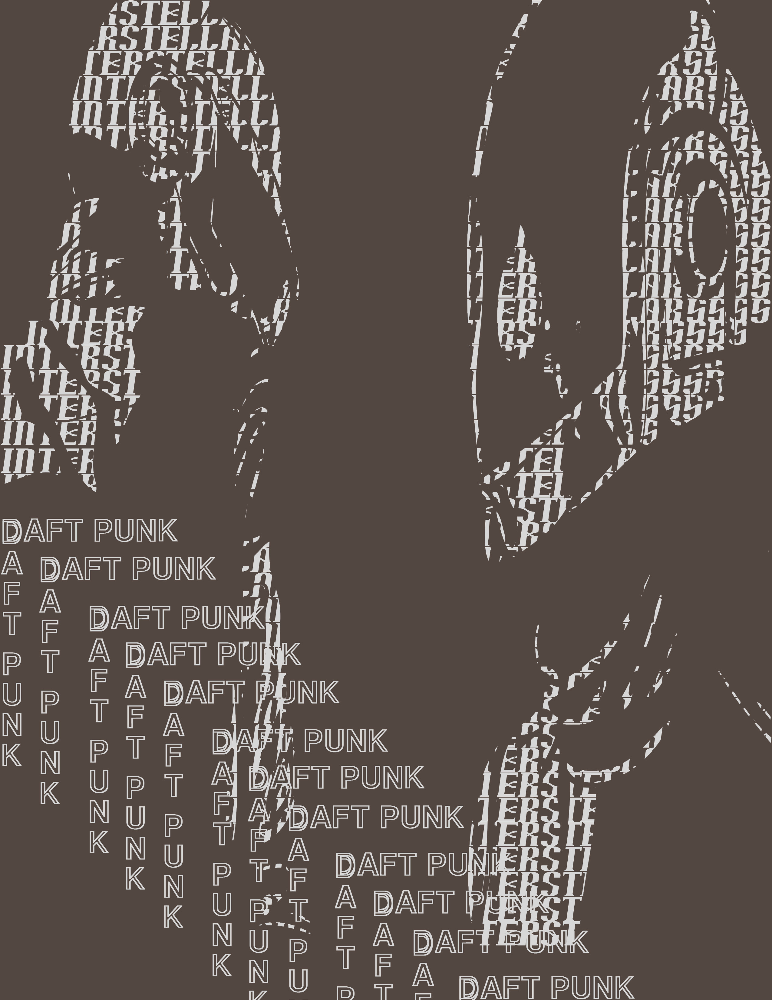
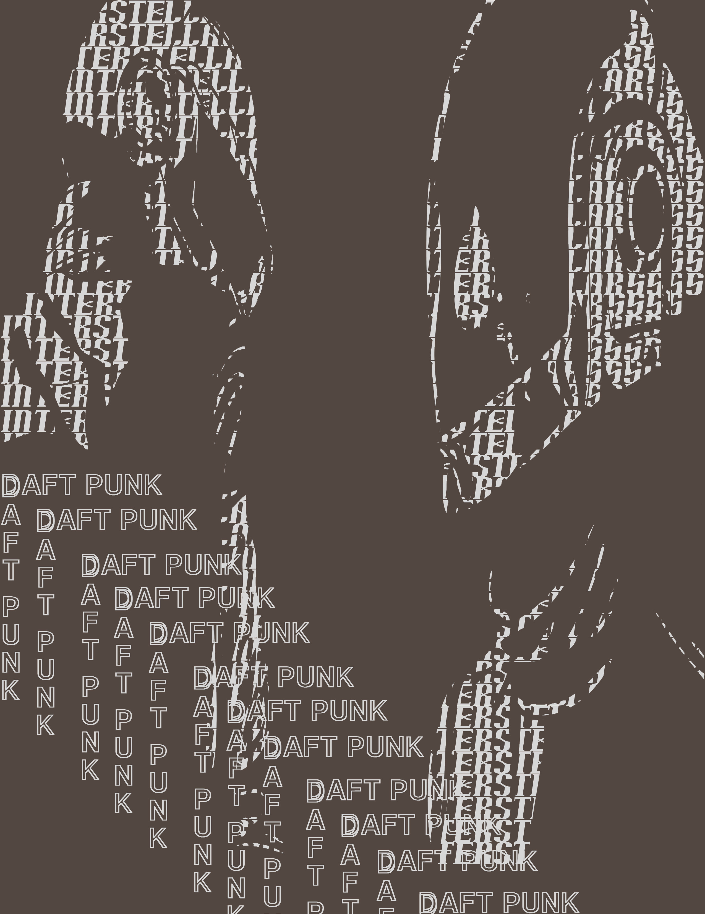

Major in General Art with a concentration Toward Graphic Design
Art History:
I studied artistic periods through history like the Renaissance and Post-modern periods.
Fundamental in Arts 1 & 2:
I learned, practiced, and applied various creative concepts and thinking techniques to my artistic style.
Learned of the purpose and meaning that comes with every object and material used in a work of art.
Included collaboration artwork, pastiche artwork, photography, videography, art presentation, and creatively
repurposing everyday items into art.
Drawing 1, 2, & 3:
I learned and practiced Contour drawing, Charcoal drawing, Reductive drawing, and Ink painting.
World Art:
I studied various art styles of diverse cultures around the world.
ITT-Technical Institute (2013-2014)
Major in Graphic Communication and Design
Fundamentals of Design:
I learned various design techniques that would better improve my technical skills as an artist and
designer.
Also learned more advanced skills for Adobe Illustrator and Photoshop.
3D Modeling Techniques:
I began using and improving my 3D design skills in 3DS Max.
Video Production Techniques:
I became more familiar with Adobe Premiere Pro and all the ins and outs of movie making.
Sustainable Graphic Design:
Taught me of more efficient, cost effective, and environmentally friendly methods to consider when
designing.
Digital Prepress and Production Processes:
I was introduced to Typography as a design medium, learned of it and prepress productsions' importance when
it
comes to the history of graphic design.
Interactive Design with Flash:
How to create website home pages, Flash movies, and interactive Flash games is what I gained from this
course.
Animation:
Animating 3D models in 3DS Max was the aim of this course.
Graphic Design for the Web:
Creating web ads and subscription links was a fundamental part of this course.
Advanced Photoshop:
Improved my Photoshop skills substantially in this course.
Fundamentals of Typography:
Focused completely on typographical creations and application.
Graphic Communications and Design Capstone:
Combined all the design skills I acquired through the years in this course.
CodeCrew Code School (2019)
Learning coding languages using Linux like Python, JavaScript, HTML, Django, Mongo, Node, REACT, Express, Java.
Completing many frontend programming projects.
Building web pages.
Skills:
Coding in Linux, HTML, JavaScript, CSS, and Python.
Website design in Wordpress.
Video Editing and Camera Operating skills
in Adobe Premiere.
Typography in Adobe Indesign.
Photography editing, altering, and retouching in Adobe Photoshop.
Logo design and image creation and design in Adobe Illustrator.
 
